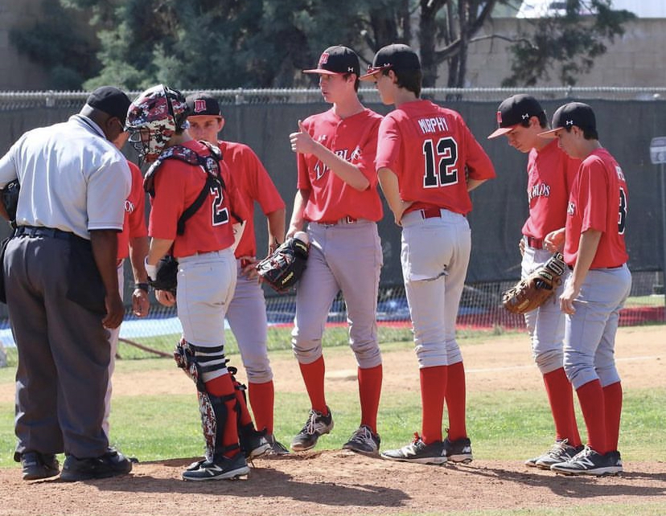
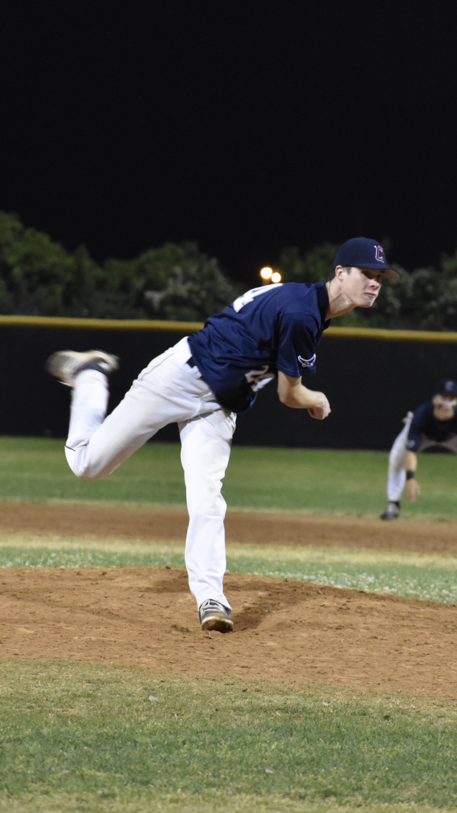

History of working as a team

Mound Meetings - May 13, 2016
Ever since I can remeber I have been playing baseball, after graduating High School in 2019, I decieded to hang up my cleats. I still coach on the side, and have debating joining a men's league to have some fun on the weekend.
I look at everything as one big team, and the biggest thing for a team is that we all respect each other. Whenever I am brought upon a new team I like to ask if everyone has repsect for each other. A huge mistake I see a lot
of leaders make is demanding respect. That works, but a faster better way is to respect your team. Once respect is given to someone else, they will in turn respect you. While I was working at Whitewater Carwash, yes a carwash
out of all places, I learned a lot about Leadership and Respect. I believe that I have the tools to be a respected leader someday, and that is the goal. However I am always focusing on leading myself more each day, getting closer and closer
to the end goals I have in mind!
"The Big Unit"
6'4 RHP From SoCal Goes Central

High Heat - June 1, 2019
Baseball has been a huge part of my life, and I would say it has given me a lot of good values for the "real world". I played from the time I was 3 years old, all the way until graduating High School. I was even offered a scholarship to play
at a division 3 school in Pennsylvania! I visited the college, met the team and coaching staff. I was projected to be their #1 prospect, and would be in the starting roation as a Freshmen. However there were a few things holding me back,
I didn't want to move across the country away from my family and it was way too cold! I ended up moving to Texas with my family in 2019, shortly after graduation, and have been building my coaching resume out here. There are a lot of opportunities
for coaching positions, and have done some private lessons! I still workout regularly, lifting weights and cardio, while keeping my arm in shape. Just in case I join a men's league to relive some of the competitive nature in me. During my prime
my fastball sat 87-91mph, and I had some serious movment on all my pitches. I like to pride myself in my approach to pitching, constantly improving on my own as well as with coaching. Each hitter I would study and discect so I knew exactly what to throw.
Most guys were focused on strike outs, meanwhile I focused on getting outs which allowed me to go deeper into games and perserve my arm. I also had an extensive arm care that I pass down to all my students, and create throwing plans for them to follow to increase
velocity and durablity.
Up on Stage
Live Preformance at The Secret Club in HoustonFallout - March 27, 2022
I make music on the side, and it did not start how you'd think. I have always loved creative writing, as I see it as a way to create reality or paint a picture through words. I started a YouTube channel when I was 13 for gaming, and life stories. It never really
took off, but I had fun making them. I even created my own short horror story, that I would later showcase on my channel. After some time I switched from gaming videos to vlogs, and ultimately dropped the channel. During my sophmore year of high school, I went
through the first of many rough patches in my life. At this time I found a few artists, before they were big, and really connected with thier music and message. I ended up meeting one of them at their show a year later, and he was such a nice genuine human being.
I shortly started to write music after the show, and used it more of an outlet for myself. I ended up writting a song, that is no longer available, about a close friend of mine and his alomst untimely end. The song got a decent amount of traction, and I had a lot of
listeners reaching out telling me that it actually helped them. It was an amazing feeling, and I found a little passion of mine. I stopped making music shortly after 2019, and didn't pick it up until 2022. I release whenever I can, but do not work on it as much as I could.
I used to feel pressured to make a song, and release it. So, I ended up making a new "artist" and releasing when I can. Bringing it back to the outlet I had when I was younger.
I have always been a team player, growing up playing baseball, looking to help out others in anyway possible. I see everyone as a teammate, and therfore treat everyone as such.
Since I was little I was always captivated by computers, and was the family's "IT guy" since I can remember. I moved from Southern California to Houston Texas back in 2019, and
started to pursue other ways of learning. I have obtained a Google IT Certification, and worked on a few Help Desks providing IT support. Now I am taking on the coding world, and
looking to break into that part of the industry! I have goals of one day owning, and operating, an agency where we provide customers with the right techie they will need. While that is far in the future,
I do have smaller goals. Firstly would to get a job either as a Software or a Full Stack Developer. After I would love the opportunity to work for Tesla, and help make the world a better place. I do believe that
we can also make it safer, as Tesla is already taking steps towards it. From there I would start working on my Agency, most likely being the only employee for awhile, and with time building up my staff!